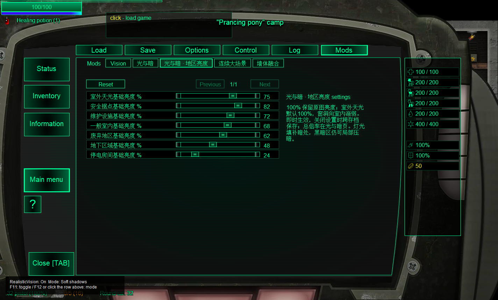

光与暗0.7：室外原图亮度与地区调节
同暂停场景、相机、灯源。左为0.6环境/光场；中为0.7；右为隐藏LAD光场的原生画面。以下关闭视野黑幕以单独看照明；并非卸载所有模组后的整版游戏对照。图片均为未修改的原始软件截图，可点击查看全尺寸。
brightness:verify / rbl / 1区
brightness:verify / surf / 1区
brightness:verify / random_mane / 1区
brightness:verify / random_sewer / 1区
brightness:verify / random_encl / 1区
brightness:verify / src / 1区
brightness:large / rbl / 1区
brightness:large / random_mane / 25区
brightness:large / random_plant / 12区
地区亮度设置
七项同页显示。截图正在测试把室外滑块拖到75%；正式默认为100%，测试完成后已恢复默认。
